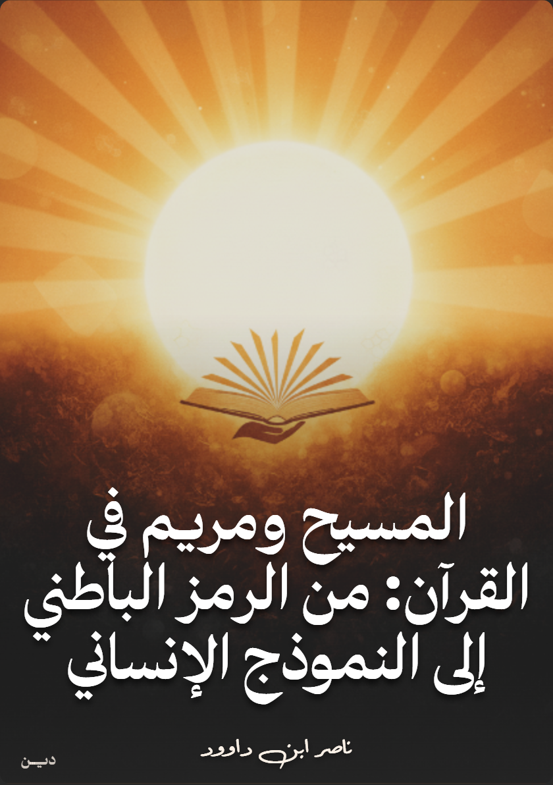

وصف الكتاب
"هذا الكتابُ ليس تفسيرًا، بل هو دعوةٌ للسفرِ في أعماقِ "اللسانِ العربيِّ المبين" ؛ لا بوصفِه لغةً فحسب، بل بوصفِه شيفرةً إلهيةً ونظامًا معرفيًا فريدًا. هو محاولةٌ للغوصِ في "غيبياتِ" المعنى التي تغيبُ عن القراءةِ الحرفيَّةِ السطحية ، لنكتشفَ كيف أنَّ قصةَ المسيحِ وأمِّهِ مريم، ليست مجرَّدَ واقعةٍ تاريخية، بل هي خارطةُ طريقٍ حيَّةٌ لكلِّ نفسٍ بشريةٍ تتوقُ إلى ولادةِ وعيها الجديد.
إنها رحلةٌ لنتعلَّمَ كيف نكونُ "مريم" في شجاعةِ الانتباذِ عن موروثاتِ الفكرِ البالية ، وكيف نُحيي "المسيحَ" الكامنَ في أعماقِنا، لنكونَ برنامجَ إحياءٍ في واقعِنا، وقوةَ مسحٍ لجهلِ العقولِ وموتِ القلوب. فهل أنتم مستعدونَ لتدبُّرِ ما لم يُكشف للكثيرين؟
فإن السلسلة التي بين يديك – "المسيح ومريم في القرآن: من الرمز الباطني إلى النموذج الإنساني" – هي ثمرة تطبيقية لمنهجية أوسع نسميها "فقه اللسان القرآني"، والتدبر الباطني الذي تعتمده هو أحد أهم فروع هذا الفقه وأكثرها غوصًا في أعماق النص. وهي تنطلق من قناعة راسخة بأن القرآن ليس نصًا خطيًا مغلقًا، بل هو كونٌ مفتوح من المعاني، نظامٌ لغوي ومعرفي فريد، ذو بناء داخلي محكم وقصدي.
الرؤية المنهجية للكتاب
يقدم هذا الكتاب منهجية "فقه اللسان القرآني" كإطار شامل لفهم الرموز والمستويات الباطنية في النص القرآني. يعتمد المؤلف على التحليل النفسي والمعرفي لشخصيتي المسيح ومريم، مقدماً قراءة معاصرة تتجاوز التفسير الحرفي إلى الفهم العميق الذي يربط بين الرمز القرآني والتطبيق الإنساني.
يمثل الكتاب ورشة عملية للتدبر الباطني، حيث ينتقل القارئ من المستوى التاريخي للقصة إلى المستوى الوجودي والإنساني، مكتشفاً كيف يمكن أن تكون قصة المسيح ومريم خارطة طريق لكل إنسان في رحلته نحو الوعي والتحرر.
أبرز مميزات الكتاب:
- قراءة باطنية عميقة لقصة المسيح ومريم في القرآن
- منهجية "فقه اللسان القرآني" كأداة للتدبر
- تحليل نفسي ومعرفي لشخصية مريم العذراء
- قراءة رمزية معاصرة لمعجزات المسيح
- ربط الرموز القرآنية بالتطبيق العملي في الحياة
- ورشة عمل تدبرية لتطبيق المفاهيم
- مخاطبة العقل التقليدي بأسلوب حوار لا صدام
- دراسة في 96 صفحة مركزة وغنية بالمضامين
فهرس المحتويات
المقدمة والأسس المنهجية
مريم: التحليل النفسي والرمزي
المسيح: البرنامج الإحيائي
الرموز والمفاهيم المتقدمة
التطبيقات العملية
خاتمة: كُن أنتَ الوفدَ القادم
في ختامِ رحلتِنا عبرَ دروبِ المعاني المستترةِ في قصةِ المسيحِ ومريم، نصلُ إلى نقطةٍ ليست هي النهاية، بل هي بدايةُ المسؤولية. لقد حاولنا معًا أن نزيحَ غبارَ الزمنِ عن رموزِ القرآنِ الخالدة، لا لنُحصيَها، بل لنُحييَها في واقعِنا.
بدأنا من "مريم"؛ تلك النفسُ الطاهرةُ التي علَّمتنا أنَّ ولادةَ "الكلمةِ" الحقَّةِ تتطلَّبُ "محرابًا" من الصمتِ الداخلي، وشجاعةَ الانتباذِ عن ضجيجِ العالمِ. ورأينا فيها نموذجًا لكلِّ وعيٍ يستعدُّ لاستقبالِ الإلهامِ الإلهي. ثمَّ تجلَّى لنا "المسيحُ"؛ ليس بوصفِه معجزةً تاريخيةً فحسب، بل كـ"برنامجٍ إحيائيٍّ" متجدِّد ، و"كلمةٍ" إلهيةٍ تحملُ في طيَّاتِها شيفرةَ العلمِ والإيمانِ معًا، ودعوةً لكلِّ إنسانٍ ليمسحَ عن نفسِهِ جيناتِ العدوانِ ويُحييَ في محيطِهِ أراضي الوعيِ الميتة.
إنَّ هذا الكتابَ لم يُكتب ليُقرأ، بل ليُعاش. إنه دعوةٌ صريحةٌ لكلِّ قارئٍ أن يتجاوزَ دورَ المتلقِّي، ليصبحَ هو نفسُه "وفدًا قادمًا" ، يحملُ مشعلَ التدبُّرِ ويُحيي هذه المعانيَ في حياتِه.
لمن هذا الكتاب؟
- الباحثون في الدراسات القرآنية: المهتمون بالمناهج الباطنية والرمزية في التفسير
- المهتمون بالبعد النفسي: الذين يدرسون الأبعاد النفسية للشخصيات القرآنية
- طلاب المعرفة الروحية: الباحثون عن فهم أعمق للرموز القرآنية
- المفكرون الإسلاميون: المهتمون بتجديد الخطاب الديني عبر فهم النص
- عموم القراء: الراغبون في بناء علاقة حية مع القصص القرآنية